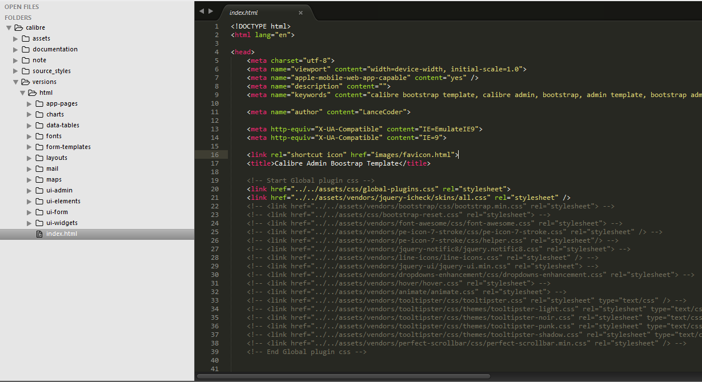
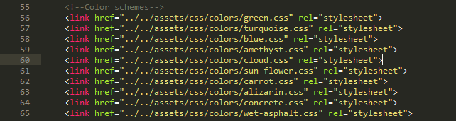
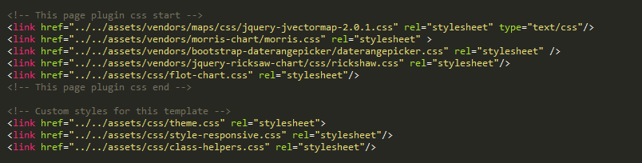
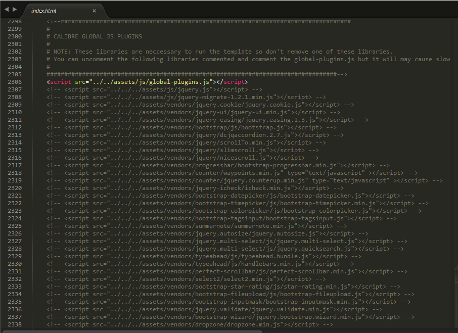
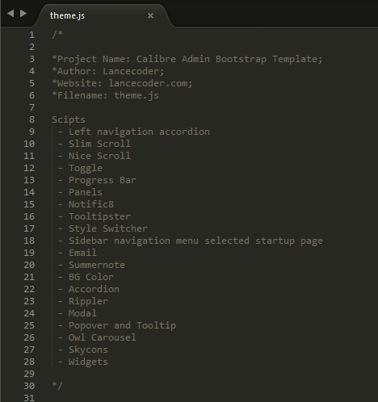
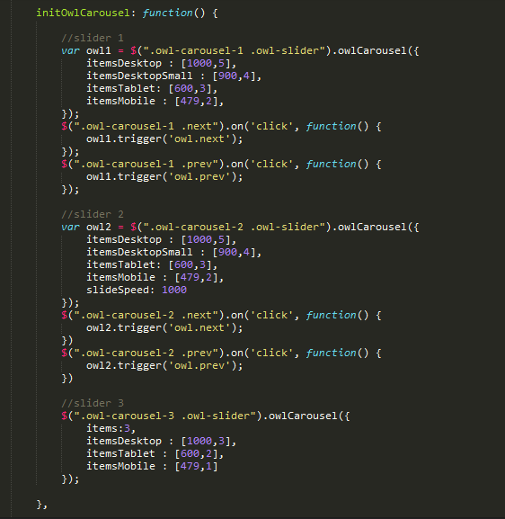
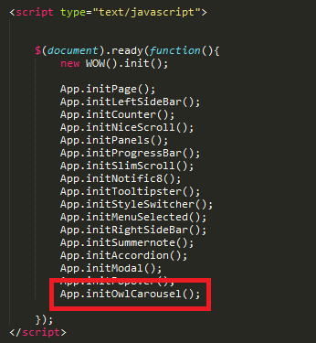
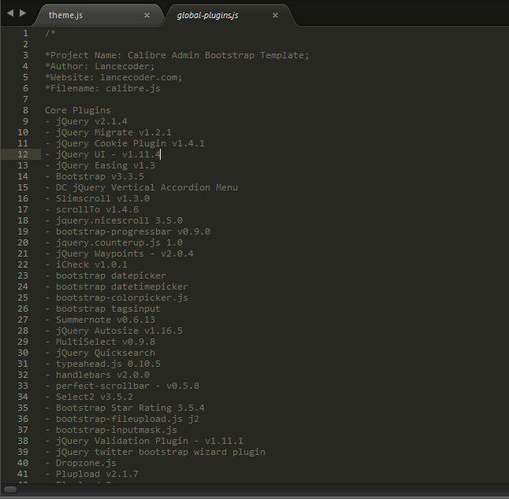

“Thema Bootstrap Admin” Documentation by “Lancecoder” v1.1
“Thema Bootstrap Admin Template”
Thank you for purchasing my theme. If you have any questions that are beyond the scope of this help file, please feel free to email via my user page contact form here. Thanks so much!
Table of Contents
- Structure
- Change Theme Color
- Theme Layouts
- Page CSS files
- JavaScript
- Sources and Credits
A) Structure - top
All files are well organize and easy to trace.

As what you see above CSS Plugins are commented because I was merge it into one file so that we can save server load. And the commented links is required by the theme to work. If you think to uncomment each CSS plugins then you may also do that and comment the global-plugins.css but not recommended.
B) Change Theme Color - top

We have 10 supported theme colors and our default theme color is green which is in the top of the image above. But it is easily to change by updating your element
<body id="default-scheme">
to
<body id="colorname-scheme">
Below is the listed colors that supported on this theme:
- default-scheme -> color green
- turquoise-scheme
- blue-scheme
- amethyst-scheme
- cloud-scheme
- sun-flower-scheme
- carrot-scheme
- alizarin-scheme
- concrete-scheme
- wet-asphalt-scheme
Note: You may comment the unusaul colors of the above image link.
C) Theme Layouts - top
Lists of layout options of this theme and just follow the instructions if you want to use this feature
-
Boxed Page
- Just add class "fixed-width-unfixed-header" in <body> element
- and add class "unfixed-header" also in <div class="leftside-navigation"> just search "leftside-navigation"
- and add class also "unfixed-header" to the <section id="main-content"> element just search it
-
Boxed Page + Fixed Header
- Just add class "fixed-width" in <body> element
- and add class also "boxed-page-fixed-header" to the <section id="main-content"> element just search it
-
Boxed Page + No sidebar
- Just add class "fixed-width-unfixed-header no-sidebar" in <body> element
- and add class also "unfixed-header merge-left" to the <section id="main-content"> element just search it
-
Boxed Page + No sidebar + Fixed header
- Just add class "fixed-width no-sidebar" in <body> element
- and add class also "merge-left" to the <section id="main-content"> element just search it
-
Full width + Unfixed header
- Just add class "full-content-unfixed-header" in <body> element
- and add class also "merge-left" to the <section id="main-content"> element just search it
D) Page CSS files - top
The below image is the sample CSS files for the page. Every page has a unique CSS files that intended only for that page.

C) JavaScript - top

The above image the theme javascript plugins is commentend and merge in into one files in order to save page load. You can uncomment it but not recommended. All of these plugins is neccessary of this theme.
This theme imports 4 types Javascript files.
- jQuery - is a Javascript library that greatly reduces the amount of code that you must write.
- Theme custom scripts - Most of the functionality of this theme is carried over of this javascript filename "theme.js". Below is the table of contents of this scripts.

This scripts are easy to modify if you want to modify one of the function of the above list then just search with the title. Below is sample function.

How to initialize this function in your page if you want to use this with the page?

-
Theme javascript global plugins - are the javascript libraries that dependencies with JQuery or stand alone libraries that will help to reduce our development. Below are some of the plugins listed on this theme. You can find it in scripts/global-plugins.js I merge it all so that we can reduce the server load.

E) Sources and Credits - top
I've used the following images, icons or other files as listed.
Note: Images are not included in downloadable version due to licensing rights.
Images
- Unsplash
Fonts Icons
- Font Awesome by Dave Gandy
- Stroke Icons Font by Pixeden
- Simple Line Icons by Jamal Jama & Ahmad Firoz
Plugins
- jQuery by jQuery Team
- jQuery Migrate by Dave Methvin, Richard Gibson, Igor Kalashnikov & Max Riveiro
- jQuery Cookie by Klaus Hartl & Fagner Brack
- jQuery UI by jQuery UI Team
- jQuery Easing by George McGinley Smith
- Bootstrap by Bootstrap Team
- DC jQuery Vertical Accordion Menu by Design Chemical
- Slimscroll by Piotr Rochala
- scrollTo by Ariel Flesler
- Jquery Nicescroll by Inuyaksa
- Bootstrap Progressbar by @minddust
- Counter-Up by Benjamin Intal
- jQuery Waypoints by Caleb Troughton
- iCheck by Damir Sultanov
- Bootstrap Datepicker by @eternicode
- Bootstrap Datetimepicker by Sebastien Malot
- Bootstrap Colorpicker by Stefan Petre
- Bootstrap Tagsinput by Tim Schlechter
- Summernote by Summernote Team
- Autosize by Jack Moore
- Multi-Select by Louis Cuny
- Typehead.js by Twitter, Inc
- Handlebars by Yehuda Katz
- perfect-scrollbar by Hyunje Alex Jun and other contributors
- Select2 by Kevin Brown and Igor Vaynberg
- Bootstrap Star Rating by Kartik Visweswaran
- bootstrap-fileupload.js by Jasny BV
- bootstrap-inputmask by @ArnoldDaniels
- jQuery Validation by Jörn Zaefferer
- Twitter bootstrap wizard by Vadim Vincent Gabriel & Jason Gill
- Dropzone by Matias Meno
- Plupload by Ephox
- X-editable by Vitaliy Potapov
- OWL Carousel by Bartosz Wojciechowski
- Magnific Popup by Dmitry Semenov
- Masonry by David DeSandro
- Momentjs by Tim Wood, Iskren Chernev, Moment.js contributors
- Bootstrap TouchSpin by István Ujj-Mészáros
- Raphaël by Dmitry Baranovskiy
- Sweet Alert by Tristan Edwards
- jQuery Words Rotator plugin by Andrea Pace
- Wow Animations by Matthieu Aussaguel
- Responsive Tables by Nadan Gergeo & Maggie Wachs
- jQuery UI Sortable Animation by Egor Sharapov
- Tooltipster by Caleb Jacob
- Bootstrap Dropdowns Enhancement by @behigh
- jQuery notific8 by Will Steinmetz
- Pogo Slider by Michael Griffin
- Bootstrap Daterangepicker by Dan Grossman
- DataTables by SpryMedia Ltd
- C3 Chart by Masayuki Tanaka
- Flot by IOLA and Ole Laursen
- easyPieChart by Robert Fleischmann
- Morris Chart by Olly Smith
- Chartjs by Nick Downie
- Sparkline by Splunk Inc
- Ricksaw by Shutterstock, Inc
Once again, thank you so much for purchasing this theme. As I said at the beginning, I'd be glad to help you if you have any questions relating to this theme. No guarantees, but I'll do my best to assist. If you have a more general question relating to the themes, you might consider visiting the forums and asking your question in the "Comments" section.
Go To Table of Contents